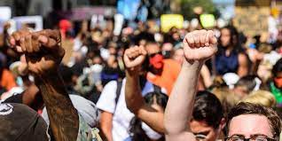

caracteristicas de los Movimientos sociales
Algunas características comunes a todos son:
Se tratan de redes de interacción entre individuos, grupos y organizaciones. Poseen una identidad compartida, un sentido de pertenencia que los aglutina. Se organizan a partir de una problemática o un conflicto común que los afecta. Desarrollan estrategias de acción colectiva para lograr cambio en el orden social. Sus integrantes mantienen vínculos estables que perduran en el tiempo.
